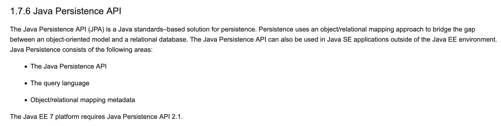
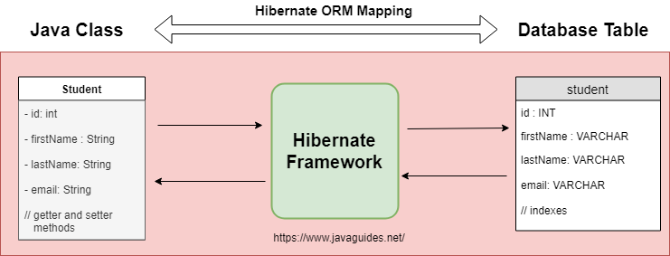

JPA是一种Java规范，不同框架对JPA有不同程度的支持。既然是规范，那就有制订者、版本、以及规范文件，参考维基百科、JPA Tutorial - Java Persistence API我们来一探究竟。
从上面我们知道，比较重要的版本有 2.0、2.1以及2.2
JPA 2.0
JSR 317: JavaTM Persistence 2.0
JPA 2.1
2011年7月，JPA 2.1 在JCP的JSR 338请求中作为新版本开发。2013年5月22日，JPA 2.1被批准为最终正式标准。

JPA 2.2
这是最新的
JSR 338: JavaTM Persistence 2.2
说明
JPA的主要用途就是，来实现ORM的，盗张图。
{kind=link}

下面我们找个框架来练练手，研究一下JPA的使用。
- Spring Data JPA
Spring Data JPA
我们要用一个例子来展现极简方式实现User的增删改查
实现实体类Entity
下面我们先展示一下要用到的User表
MariaDB [test]> desc user;
+----------+-------------+------+-----+---------+-------+
| Field | Type | Null | Key | Default | Extra |
+----------+-------------+------+-----+---------+-------+
| username | varchar(32) | YES | | NULL | |
| password | varchar(32) | YES | | NULL | |
| sex | tinyint(1) | YES | | NULL | |
+----------+-------------+------+-----+---------+-------+
3 rows in set (0.02 sec)
定义一个实体类
import javax.persistence.Entity;
import javax.persistence.Id;
@Entity
public class User{
@Id
private String username;
private String password;
private int sex;
public String getUsername() {
return username;
}
public void setUsername(String username) {
this.username = username;
}
public String getPassword() {
return password;
}
public void setPassword(String password) {
this.password = password;
}
public int getSex() {
return sex;
}
public void setSex(int sex) {
this.sex = sex;
}
}
其中username作为主键，当然，这并不是一个好主意,最好使用一个自增的ID或者uuid作为主键。
实现接口
这是一个CRUD的接口
import org.springframework.data.repository.CrudRepository;
import java.util.List;
public interface UserRepository extends CrudRepository<User, String> {
List<User> findBySex(int sex);
List<User> findAll();
}
使用
例子来源于accessing-data-jpa
User me = new User();
me.setUsername("xuanmingyi");
me.setPassword("iygnimnaux");
me.setSex(1);
repository.save(me);
以上就可以用了，还算比较方便。大部分语言的ORM都能做到。
其中需要注意的几个点就是:
- 如果不使用
@Table注解，则默认实例类名和数据库表名一样。比如User类对应user表。 - Spring Data JPA 还能从函数签名中推导出要求的逻辑，当然 只能是简单逻辑。碰到函数签名，想到一个有意思的问题，为啥C语言不能重载。
函数签名
下面做一个实验来验证一下C和CPP的签名机制。
int test(){return 0;}
int test2(){return 0;}
int main(){return 0;}
使用c编译器,函数签名就是函数的名字
# 使用c编译器
$ gcc -c main.c -o main.c.o
$ objdump -t main.c.o
main.c.o: file format Mach-O 64-bit x86-64
SYMBOL TABLE:
0000000000000020 g F __TEXT,__text _main
0000000000000000 g F __TEXT,__text _mm
0000000000000010 g F __TEXT,__text _mm2
使用cpp编译器,函数签名根据函数的名字以及参数列表
# 使用cpp编译器
$ gcc -c main.cpp -o main.cpp.o
$ objdump -t main.cpp.o
main.cpp.o: file format Mach-O 64-bit x86-64
SYMBOL TABLE:
0000000000000000 g F __TEXT,__text __Z2mmv
0000000000000010 g F __TEXT,__text __Z3mm2v
0000000000000020 g F __TEXT,__text _main
SO: 名字一样，参数不同的函数，对C来说，就是一样的函数；对CPP而言，就是不一样的函数。
JAVA可以重载，所以，签名一定至少包含 名字以及参数列表
优化
有一位JAVA前辈，老徐，提示我，可以使用lombok减少代码量
上面的User类可以改写成如下
import lombok.Data;
import javax.persistence.Entity;
import javax.persistence.Id;
@Entity
@Data
public class User{
@Id
private String username;
private String password;
private int sex;
}
代码少了一大堆，但我是不会夸Java的，这不是应该的吗？既然可以推倒出来，为啥要写出来！以前的JAVA太咸了，需要适当加点糖 :)
遗留问题 TODO
- CrudRepository的规则
- JPA的其他注解
- JPA如何做类到表的映射的，如何解决大小写等逻辑？大小写！大小写！大小写！
- Java的函数签名机制
- lombok的具体用法以及实现原理